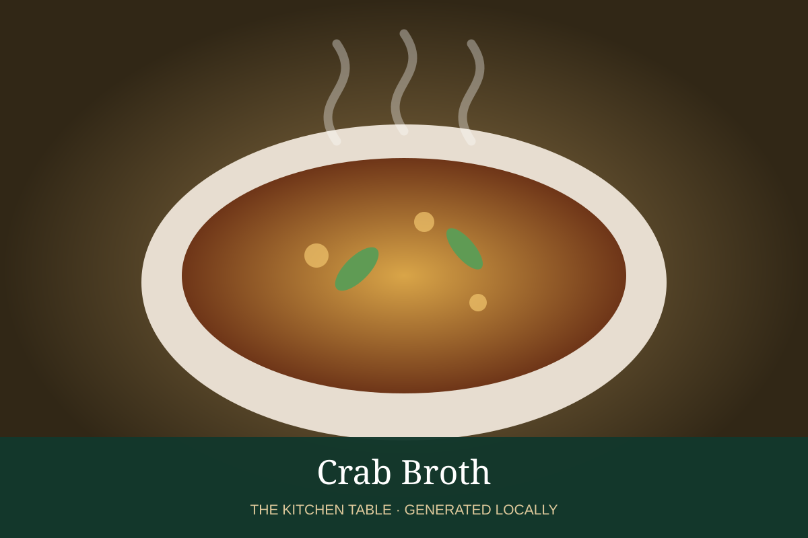

← Back to all recipes
BROTH & STOCK · SEAFOOD
Crab Broth
Sweet crab-shell broth ideal for crab soups, sauces, and seafood rice.
Broth & StockSeafood

Ingredients
- 2 lb crab shells and bodies
- 1 onion
- 1 carrot
- 1 celery rib
- 2 garlic cloves
- 1 tbsp tomato paste
- 2 qt water
Preparation
- Break shells into manageable pieces and roast or sauté.
- Add vegetables and tomato paste; cook until fragrant.
- Add water and simmer 45 minutes.
- Strain carefully through a fine sieve.